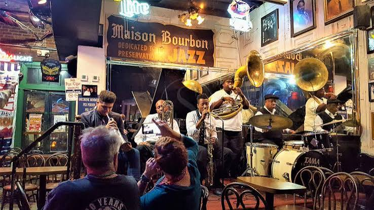

La cuisine cajun, une tradition louisianaise
La cuisine cajun s'est développée en Louisiane, nourrie par l'histoire des Acadiens et par des échanges culinaires locaux. Elle valorise les préparations conviviales, les épices et des produits variés. Elle se distingue de la cuisine créole, même si leurs recettes et influences se croisent.
Quatre spécialités à connaître
Le jambalaya associe riz, aromates et garnitures. Le gumbo est un ragoût servi souvent avec du riz. Le boudin cajun est une préparation de viande et de riz assaisonnés, présentée dans un boyau ou sous d'autres formes. L'étouffée est une préparation mijotée, souvent à base d'écrevisses ou d'autres fruits de mer.
La convivialité avant tout
Chez L'Assiette Chérie, à Saint-Cyprien, l'inspiration cajun se traduit par le plaisir de partager un repas épicé, gourmand et soigneusement présenté, dans un esprit de brasserie chaleureuse.
À découvrir : Retrouvez nos spécialités que sont le jambalaya et le gumbo, deux plats phares de Louisiane.